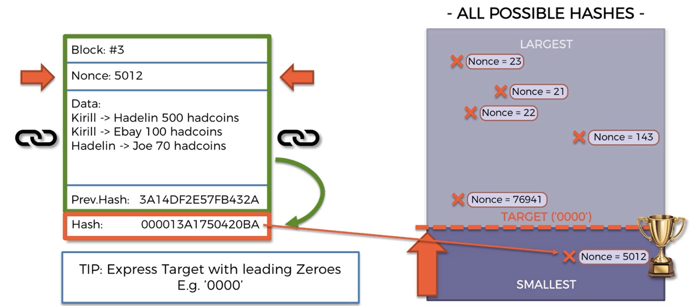

Consensus Protocols
Hello and welcome back.
And today we look into consensus protocols. So here's our map we just ticked of mining. And finally we are at consensus protocols the last step in our saga. All right. So let's have a look at what we're talking about.
How do you keep adding blocks in which direction. How do how to know when to add a block and we walked across the whole network. And so the challenge is that a consensus protocol is as you recall in the bicentennial tolerance example the challenge for the generals was to understand which command to listen to like whether to attack or retreat.
In our case the consensus protocol for a blockade has to solve two main challenges. Number one is protect the network from attackers. And we already talked about the situation where a attacker tries to attack somewhere in the middle of the chain. So if an attacker tries to like change this block then that's going to be almost impossible for them because they would have to change all these blogs and then all these blogs on all every single load. So that's not the problem we're talking about here.
The problem we talk about here is what happens if an attacker tries to put a block at the end of the chain tries to add a new blog that is malicious. And the second challenge that it says is Pericles should solve in a block chain is the challenge of competing chains. So in a large block chain because it is distributed across the world.
They can be a lag between nodes especially those that are far away from each other and it couldn't so happen that two nodes that are far away from each other could find two could successfully mine a block at the same time like that. And there's nothing malicious about this there's no attackers. It's just so happens because once let's say this one minds the block before the information about that gets to this one maybe takes like two seconds to get here.
But during the first second this this node already also might a block and from the perspective of each one of these nodes they have done nothing wrong. They are in total agreement with how mining works.
But nevertheless for the block chain this is a problem because it needs to be in consensus on how to keep growing it needs to know how do we keep growing with the orange block or where do we keep growing if the purple block because as we will discuss further down the course these blocks could actually have different transaction .
No it has to pick one of the two blocks. And so that's the challenge how does the network come to a consensus on how to keep growing because
if it doesn't come to a consensus like if the consensus protocol is not in place what'll happen is you'll have this change you'll have this change will be conflicting and then they'll split up into two and then later on the block will split up into four and eight and so on and then eventually you just have a ton of options which are completely separate.
So we don't want that we want an integral block. So that's the second chance. And in terms of consensus protocols it's important to note at this point that they are multiple different types of consensus protocols and at the end of this tutorial I'll recommend an article which highlights a couple of them which can be useful.
And what we're going to be talking about is proof of work because that's the one that's the original one describe the situation Okamoto in his paper and also it's the one that Bitcoin currently uses and is also the one that if still uses even though they're planning on moving to proof of state.
So that's the one we're going to be talking about. So where does this term proof of work come from. Well the great news is that by talking about the information or the things that we talked about in the previous session such as mining such as hash hashing and P2P networks and the mutilator we've already
laid a very good foundation for seeing how everything comes together to create this consensus of proof work. And so we're going to start with mining.

So here you can see that's where we finished off with the whole mining situation. That's the main takeaway from here is that miners need to come up with this nonce with his gold and loans which will create a hash which is under the target and then they will be allowed to create a block. So that's the cryptographic challenge that they're solving. And they have to go through lots and lots of iterations to get to that nonce. Hundreds of thousands millions billions of iterations. They need to go through until they find that nonce.
And so what does that mean. That means a lot of time. That means a lot of hardware investments like into their into their mining rigs or mining computers and also a lot of electricity they have to pay huge electricity bills. And this hash that they have in the end the solution to the cryptographic puzzle is the proof of work is the proof that they've put in all this work in order to solve the cryptographic challenge.
So that's where the term comes from. That's number one and number two is that we can see it's important to see that we do have to put in a lot of work because this will still be important in the next slide. So that's it's not a computation only heavy exercise for them they don't spend a lot of pictures or anything like that in just a routine process that they do.
So we're clear of that. That was us talking about prevention of attacks.
So now going back to our distributor network what happens when a miner adds and your book comes there's that you block the network or the lauching will reward the miner for mining that blog. So in Bitcoin it's 12 in a heartbeat Quine's. In theory it's a certain amount of ether for adding a block.
And also the miner will get the fees associated with the transactions that are included in that block. So there is monetary incentive this financial incentive for miners to mine. And also there is financial incentive for miners to play fair.
Why is that's because they've put in a lot of work. So if they put in a lot of work and then they add a block that is rejected or like they add a block that is you know they found that cryptograms sold in photographic puzzle and they found the correct hash and they add that block but they've included malicious transactions or they've done.